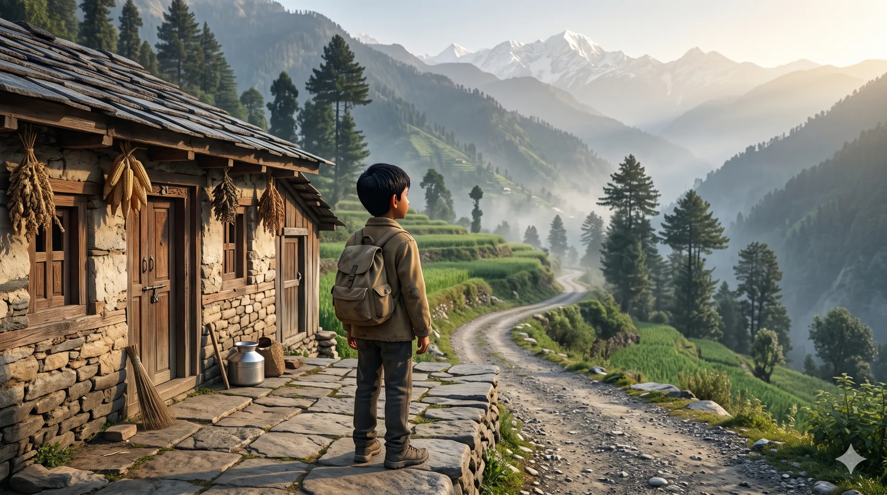
01 Home · Himachal · before 2012
It started on a mountain road.
Tech was rare where I grew up, so I learned to watch closely. That habit is still how I design.
What I took with mePay attention first. Then build.
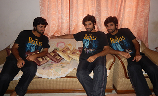
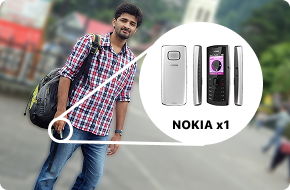
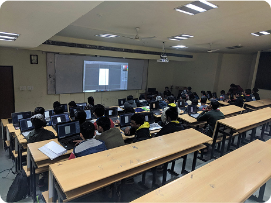
02 College · IIIT Allahabad · 2012–16
Design found me in an engineering college.
A B.Tech in IT, and a side job leading design for our tech society. I fell for people more than tools.
What I took with meEngineer by degree, designer by instinct.
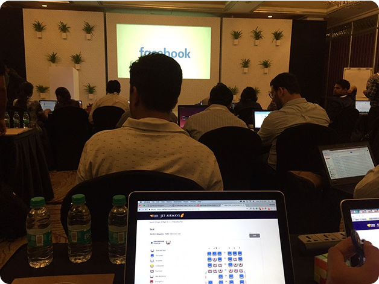
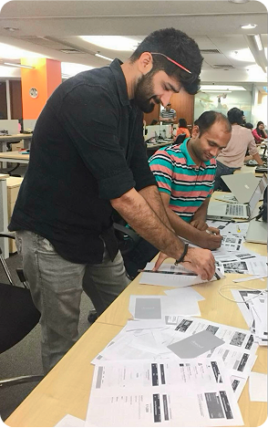
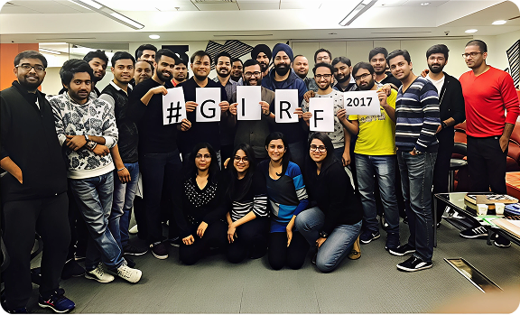
03 Swiggy Dineout · 2016–19
Mobile-first, and fast.
India went mobile and so did dining out. I led Predict & Win and the Great Indian Restaurant Festival.
Key resultMega Mind Award · app rated 4.7 on Play
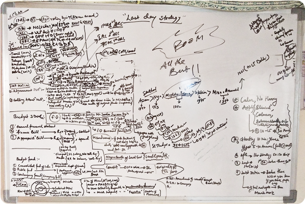
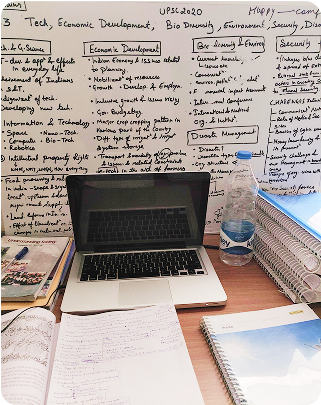
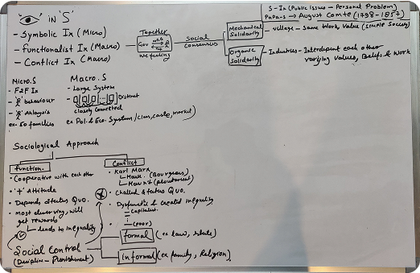
04 The pause · Travacations · 2019–22
The world slowed down. So did I.
I prepared for the Civil Services and shaped design strategy for a travel startup. Stillness taught me systems.
What I took with meClarity beats speed.
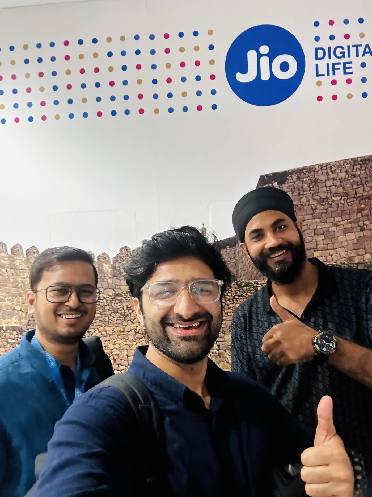
05 Jio Platforms · 2022–23
Back to build, at Jio scale.
Senior UX Manager across MyJio, JioMart and Netmeds. Apps with hundreds of millions of downloads.
Key result+28% add-to-cart on JioMart discovery
Read the JioMart story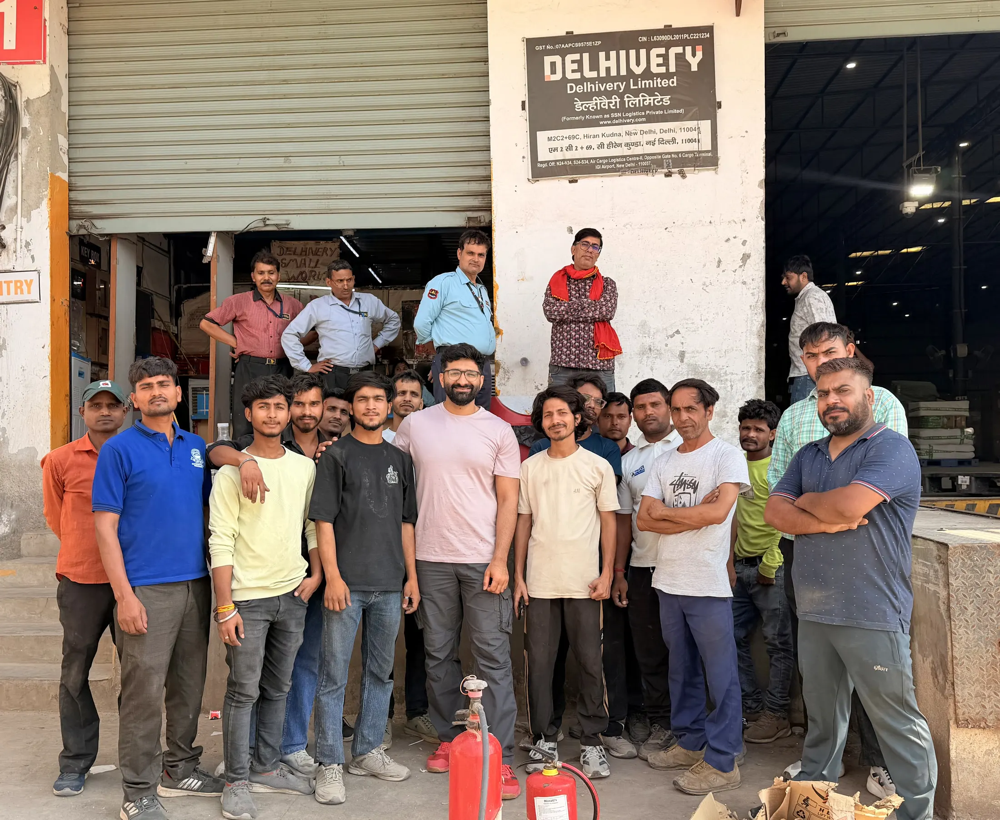
06 Delhivery · 2023–now
Leading design where parcels move.
I lead the Gurgaon design team across logistics, hubs and financial services. I do research on the ground, not just in Figma.
Key results80.4% self-serve activation · hub compliance 65% → 79%
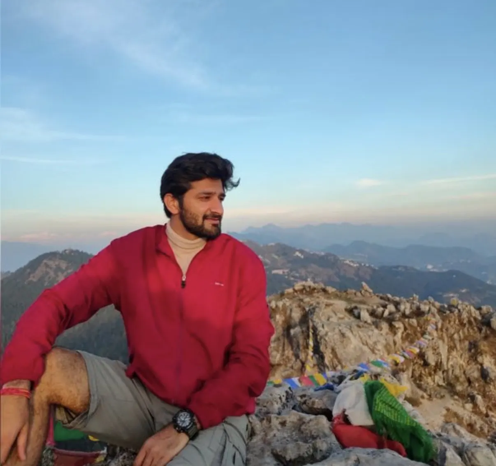
07 Next chapter · 2027
The next stop is yours.
I'm looking for my next design leadership role. If you build things people use every day, let's walk together.